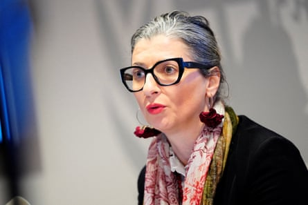

The UN special rapporteur on human rights in the occupied Palestinian territories has called for sanctions and an arms embargo on Israel and for global corporations to be held accountable for “profiting from genocide” in Gaza.
A report by Francesca Albanese to the UN Human Rights Council on Thursday points to the deep involvement of companies from around the world in supporting Israel during its 21-month onslaught in Gaza.
“While life in Gaza is being obliterated and the West Bank is under escalating assault, this report shows why Israel’s genocide continues: because it is lucrative for many,” the report says.
Special rapporteurs are independent human rights experts appointed to advise or report on specific situations. Albanese, an Italian legal scholar who has been the special rapporteur on the occupied Palestinian territories since 2022, first referred to the Israeli offensive in Gaza as a genocide in January 2024.
The international court of justice (ICJ) is weighing the charge of genocide against Israel but Albanese has argued that the evidence of genocide is overwhelming and pointed out that the court issued preliminary measures last year recognising the possibility of genocide in Gaza, triggering universal responsibility to prevent it.
Israel has largely ignored the ICJ’s calls on it to take steps to mitigate the toll on Palestinian civilians and disputed the court’s jurisdiction.
Albanese said there was no reason to wait for an ICJ judgment, which she said was only being delayed by the long queue of cases the court has to judge.
“I have investigated it day by day for 630 days and, frankly, after five months I could tell you that it was genocide. You don’t need a scientist to establish what is genocide. You just need to connect the dots,” she told the Guardian.
“Israel has [committed] acts that are recognised as genocidal, like acts of killing nearly 60,000 people, probably more, creation of conditions of life calculated to destroy, destruction of 80% of the homes and no water, no food.”
According to the Gaza health ministry, more than 56,000 Palestinians have been killed by Israel’s campaign in Gaza, which was triggered in October 2023 when a Hamas attack killed 1,200 Israelis. Many experts have said the real death toll in Gaza could be much higher as many Palestinians are missing and believed to be buried under the rubble.
The special rapporteur’s report is titled “ From economy of occupation to economy of genocide ” and looks at international corporate involvement in supplying weapons and supplying heavy machinery used to raze Palestinian neighbourhoods in Gaza and the West Bank, agricultural companies selling produce from illegal settlements, and investment firms helping fund the war.
Francesca Albanese: ‘You don’t need a scientist to establish what is genocide.’Photograph: Ida Marie Odgaard/Reuters
“While political leaders and governments shirk their obligations, far too many corporate entities have profited from Israel’s economy of illegal occupation, apartheid and, now, genocide,” the report says.
“The complicity exposed by this report is just the tip of the iceberg; ending it will not happen without holding the private sector accountable, including its executives.”
The report says the Israeli military has benefited from “the largest ever defence procurement programme” for the F-35 fighter jet, made by Lockheed Martin with the involvement of more than 1,600 other manufacturers and eight states. It says Israel was the first to fly the warplane in “beast mode”, carrying 18,000lb of bombs at a time.
On Monday the UK’s high court ruled that Britain’s export of parts for the F-35 to Israel was lawful on the grounds that a court should not intervene in a sensitive political issue that was best left to ministers and parliament, even though it said UK-made parts could be used in the “commission of a serious violation of international humanitarian law in the conflict in Gaza”.
A Lockheed Martin spokesperson said: “Foreign military sales are government-to-government transactions. Discussions about those sales are best addressed by the US government.”
The Trump administration has been enthusiastically supportive of Israel in the Gaza war. On its website, Lockheed Martin says it is “proud of the significant role it has fulfilled in the security of the state of Israel”.
The US technology firm Palantir comes under particular criticism in the Albanese report for its close partnership with the Israel Defense Forces (IDF), with which the company agreed a strategic partnership for Palantir to assist its “war-related missions”.
Palantir, whose software allows automated decision-making on the battlefield, has denied any involvement in the IDF’s Lavender or Gospel programmes for identifying targets in Gaza.
Palantir did not respond to a request for comment but has said in response to earlier allegations: “We have no relationship to these programmes and their use but are proud to support Israeli defence and national security missions in other programmes and contexts.” It said it took a variety of methods to “mitigate against human rights risk in our work”.
The Albanese report also criticises heavy equipment manufacturers such as Volvo for allegedly supplying heavy machinery used in mass demolitions of homes, mosques and infrastructure in Gaza and the West Bank.
“These companies have continued supplying the Israeli market despite abundant evidence of Israel’s criminal use of this machinery and repeated calls from human rights groups to sever ties,” Albanese says in the report. “Passive suppliers become deliberate contributors to a system of displacement.”
Volvo said much of the equipment being used had been acquired on the secondhand market, over which it had no influence. The Chinese-owned, Sweden-based company has an agreement with an Israeli company, Merkavim, to assemble buses on Volvo chassis.
A Volvo spokesperson said the agreement included a requirement that “Merkavim shall comply with applicable laws and regulations and the Volvo Group supply partner code of conduct, which includes specific human rights requirements.”
Albanese pointed to an ICJ advisory opinion last year that said Israel’s continued presence in the occupied territories was unlawful and that Merkavim was on a UN database of companies operating on the West Bank.
“So the due diligence that is imposed on Volvo is to withdraw immediately from the partnership that it has with companies that are on the database and with Israel,” she said.
The report notes that Israel has helped pay for the war and consequent deep budget deficits by selling treasury bonds. By buying them, the report argues, international finance has helped keep the war going.
“Some of the world’s largest banks, including BNP Paribas and Barclays, stepped in to boost market confidence by underwriting these international and domestic treasury bonds, allowing Israel to contain the interest rate premium, despite a credit downgrade,” it says.
It names asset management firms including Pimco (owned by the German-based financial services company Allianz) and Vanguard as major buyers of Israeli treasury bonds.
Pimco declined to comment. A spokesperson for Vanguard said the company “maintains robust policies and procedures to ensure compliance with all applicable laws, regulations and sanctions in the various jurisdictions in which we operate. This includes adhering to laws that may require specific investment restrictions in companies that are sanctioned for human rights abuses.”
The report also points to the Norwegian Government Pension Fund Global (GPFG), the world’s largest sovereign wealth fund, for having increased its investment in Israeli companies by 32% since October 2023.
On Monday, Norway’s biggest pension fund, KLP, announced it would no longer do business with two companies – the Oshkosh Corporation in the US and ThyssenKrupp in Germany – because they sell equipment to the Israeli military that could be being used in Gaza. Neither company is named in the UN report.
Oshkosh did not reply to a request for comment. A ThyssenKrupp spokesperson said the company “conducts its deliveries exclusively on the basis of lawful authorisations and in strict compliance with the foreign and security policy guidelines of the Federal Republic of Germany. The German government is involved in the process from the outset, with preliminary inquiries submitted before any project begins.”
KLP is a separate entity from GPFG but they are closely associated and reportedly share their environmental, social and governance analyses of investments around the world.
A GPFG spokesperson said: “The market value of our investments in Israel has increased but this is not because we have increased our ownership – the market value has increased due to returns.” They added that its investments were overseen by a council of ethics appointed by Norway’s ministry of finance, which has excluded some firms because of “serious violations”.
“As a responsible investor, we monitor our investments and expect companies to conduct enhanced due diligence in situations of war and conflict,” the spokesperson said.
Albanese’s report points to precedents in holding corporations legally accountable for human rights abuses they enable, including the prosecution of leading German industrialists at the Nuremberg tribunal after the second world war, in what was known as the IG Farben trial.
Another example cited is the South African truth and reconciliation commission, which took the country’s big companies to task for their involvement in apartheid.
The UN published its own benchmarks in 2011, in its guiding principles on business and human rights, which said corporations had a responsibility to do due diligence to ensure they were not infringing human rights and to take steps to address harmful effects of their business.
In her recommendations, Albanese calls for sanctions and an arms embargo on Israel, and urges the international criminal court “and national judiciaries to investigate and prosecute corporate executives and/or corporate entities for their part in the commission of international crimes and laundering of the proceeds from those crimes”.